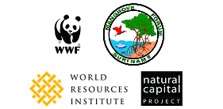
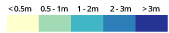
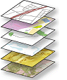
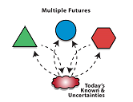
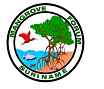

Assessment of peri-urban coastal protection options
Faced with growing intensity of human activities and climate change, coastal inhabitants seek a better understanding of how modifications to the biological and physical environment can affect their exposure to storm surge and flooding.
WWF Guianas, the Mangrove Forum and partners are compiling relevant information on the importance of mangroves and other coastal protection options, including sediment trapping units. These options may include building a permanent or semi-permanent dyke, designation of no-build or no-clearance areas for mangroves, or some combination (e.g., mixture of soft/engineered solutions). It may also include the option to relocate coastal populations away from flood prone areas.

In Weg naar Zee, both engineered and nature-based options are being considered. Engineered options include a kleidam (earthen dyke) and sediment trapping units*. Findings indicate that the proposed dyke will not protect the Hindu Temple. Mangrove enhancement is a more cost-effective solution as it generates a higher net-present value (290M US$) for a period of 25 years, in comparison to the earthen dyke protection scenario (104M US$). This enhancement involves establishing a setback with conditions to allow mangroves to recolonize.
*The role of sediment trapping units was not considered in this analysis.
Water Height Analysis for mangrove enhancement option. Modeled flood depth for year of scenario.
MIDDLE
East of Weg naar Zee, behind the mangrove/swamp forest belt, both 1) the construction of a kleidam (earthen dyke with rocks on the side) and 2) the establishment of a setback to protect existing mangroves are being considered as coastal protection options. The mangroves in this area are currently healthy and expanding naturally. Building a dyke behind the mangroves would make little sense in either physical or economic terms. Mangrove enhancement generates a net-present value that is roughly 3 times that of a kleidam (154M versus 56M US$).
EAST
Model results suggest that the construction of a riverdijke (sea wall) is the appropriate option to protect the coastal area along the Suriname river, northeast of Paramaribo's Centrum ressort. Additional flooding might occur from the land-side during storms due to inadequate or clogged drainage. Due to the high commercial value of property in this area, the total avaoided damages due to the presence of a riverdijke is estimated to be between 0.87 and 1.2 billion US$.
Data indicates the location of current environments and human activities and serve as a foundation for discussions of future plans. It also serves as inputs to shoreline model and visually depicts alternative options. Data include biophysical information such as elevation and coastline shape, maps of human activities, the distribution of coastal habitats, and socioeconomic data such as property values.
Scenarios are simplified descriptions of possible futures, used to illuminate options and consequences. They are not predictions, but instead storylines of what the future could look like.In this study, we evaluated potential engineered and nature-based options to examine how actions taken today may play out in the future. Scenario analysis helps uncover unintended tradeoffs or surprising "win-wins" that are otherwise difficult to imagine when many human activities and social, economic, and ecological objectives interact.
Shoreline modeling quantifies how changes in ecosystems and socio-economic conditions under alternative future scenarios lead to changes in environmental condition, ecological function, and benefits to people. We
Identified vulnerable land and exisiting coastline protection
Estimated relative shoreline stability based on range of factors
Evaluated how much protection each scenario is offering
Examined protection over a 25-year period
*Note: A water height analysis was also applied in the WEST region
The Valuation approach consisted of two phases:
Spatial (map-based) evaluation of the shoreline protection benefits provided by engineered and nature-based options
Evaluating the shoreline benefits in monetary terms through comparing the avoided economic damages due to the presence of alternative shoreline protection options and their respective costs.
Outreach involves stakeholders and local experts to garner feedback and enhance transparency. The Mangrove Forum Suriname is a key partner in this science-policy process of engagement as we seek to better understand what science and information is really needed to inform decision-making.